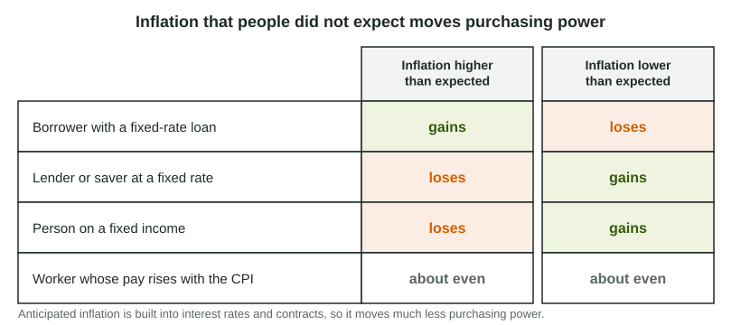

Costs of Inflation
When inflation is higher than people anticipated, fixed-rate borrowers repay in dollars that buy less, so they gain while lenders, savers and people on fixed incomes lose; lower-than-anticipated inflation reverses this.
Part 1 · Hook
Why this matters
Part 2 · Before you start
What this builds on
Part 3 · Prerequisite check
Quick check before you start
1. The CPI goes from 100 to 108 in a year. What is the inflation rate?
- 8%
- 108%
- 1.08%
- 0.08%
Show the answer
- Correct: 8%:
- 108%:
- 1.08%:
- 0.08%:
2. Rosa's nominal wage rises 3% while prices rise 5%. What happens to her real wage?
- It falls by about 2%
- It rises by about 3%
- It rises by about 8%
- It stays the same
Show the answer
Prices rose faster than her pay, so her pay buys less: about .
- Correct: It falls by about 2%:
- It rises by about 3%:
- It rises by about 8%:
- It stays the same:
Part 4 · See it
See it first

Part 5 · Step by step
How it works, step by step
- Inflation turns out higher than borrowers and lenders anticipatedthe dollars repaid on a fixed-rate loan buy less than both sides planned
- The repaid dollars buy lessthe borrower gains purchasing power and the lender loses it
- Prices rise while a pension stays the same in dollarspeople on fixed incomes can buy less
- Prices change often, even when the change is anticipatedfirms pay menu costs and households pay shoe-leather costs
Part 6 · Key ideas
Key ideas
- Unanticipated inflation helps fixed-rate borrowers and hurts lenders, savers and people on fixed incomes. Lower-than-anticipated inflation, or deflation, does the reverse.
- Anticipated inflation is built into interest rates and contracts, so it moves much less purchasing power.
- Menu costs (changing prices) and shoe-leather costs (holding less cash) come with any inflation.
- Indexing pay or pensions to the CPI protects people from inflation; uncertainty about inflation makes long-term plans riskier.
Part 7 · Misconception
A common mistake
The wrong idea: Inflation hurts everyone equally, because prices rise for everyone.
What actually happens: Inflation that people did not anticipate redistributes: fixed-rate borrowers gain while lenders, savers and people on fixed incomes lose. People whose incomes rise with prices are roughly protected.
Part 8 · Check yourself
Check yourself
Exam-style questions. Anything you miss goes into your review queue.
Scenario
A one-year loan in Country X
Maya borrows $10,000 from a credit union for one year at a fixed interest rate of 8%, so she will repay $10,800. When they sign, both Maya and the credit union believe inflation over the year will be about 3%. In fact prices rise 8% over the year: the consumer price index goes from 100 to 108.
1. Who gains from the inflation in this scenario?
- Maya, the borrower
- The credit union, the lender
- Both gain, because the interest rate was fixed
- Neither, because the loan is repaid in full
Show the answer
Unanticipated inflation helps borrowers with fixed-rate loans and hurts lenders: the money paid back buys less than either side expected when they signed.
- Correct: Maya, the borrower: Right: inflation was higher than both sides planned, so she repays with dollars that buy less than the dollars she borrowed.
- The credit union, the lender: The lender is repaid in dollars worth less than it planned on, so it loses.
- Both gain, because the interest rate was fixed: A fixed rate is exactly why the surprise moves purchasing power from one side to the other.
- Neither, because the loan is repaid in full: The dollar amount is repaid, but those dollars buy less than both sides planned.
2. Measured in the prices of the day Maya borrowed, how much is her $10,800 repayment worth, in dollars?
Type a number. A four-function calculator is allowed, as on the exam.
Show the answer
Divide by the price index and multiply by 100:
- Answer: 10,000
Scenario
A surprise jump in inflation in Country Q
For years, inflation in Country Q was about 2%, and everyone planned on that. This year it jumps to 9%. Four people react: Ruth is retired and lives on a pension of the same dollar amount every month. Dev has a union contract that raises his pay each year by the rise in the CPI. Lucia owns a restaurant and has reprinted her menus twice to show higher prices. Tom now keeps less cash in his wallet and goes to the bank more often, so his money does not sit losing value.
3. How does the jump in inflation affect Ruth?
- She gains, because her pension stays the same
- She is unaffected, because she is retired
- She gains, because retirees spend less
- She is hurt: her pension buys less
Show the answer
People on fixed incomes, such as a pension that does not rise with prices, lose purchasing power when inflation is higher than planned.
- She gains, because her pension stays the same: The same dollars buy fewer goods when prices rise, so she can afford less.
- She is unaffected, because she is retired: Retirees still buy goods and services, so rising prices matter to them.
- She gains, because retirees spend less: Spending less does not protect a fixed income from rising prices.
- Correct: She is hurt: her pension buys less: Right: a fixed income in dollars loses purchasing power when prices rise faster than planned.
4. Lucia reprinting her menus is an example of which cost of inflation?
- Unemployment costs
- Menu costs
- Shoe-leather costs
- Substitution bias
Show the answer
Menu costs are the real resources used to change prices. They rise with how often prices must change.
- Unemployment costs: Lucia keeps her restaurant open; the cost here is updating prices.
- Correct: Menu costs: Right: the cost of changing posted prices, such as printing menus or updating price tags and websites.
- Shoe-leather costs: Shoe-leather costs are the time and effort of holding less cash, as Tom does.
- Substitution bias: Substitution bias is a measurement problem with the CPI, not a cost to a firm.
Data
A savings account and inflation in Country Z
| Year | Interest paid on savings | Inflation rate |
|---|---|---|
| 1 | 3% | 1% |
| 2 | 3% | 3% |
| 3 | 3% | 5% |
5. In which year does the saver's account buy less at the end of the year than at the start?
- Year 1
- Year 2
- Each year, because inflation is above zero
- Year 3
Show the answer
Savings lose purchasing power when inflation is higher than the interest they earn.
- Year 1: The balance grew 3% while prices rose 1%, so it buys more.
- Year 2: The balance and prices both rose 3%, so its purchasing power stayed about the same.
- Each year, because inflation is above zero: The balance keeps up with prices when its interest is at least as high as inflation.
- Correct: Year 3: Right: prices rose 5% while the account grew 3%, so the balance buys about 2% less.
6. Prices unexpectedly fall 2% in a year. Who is hurt?
- People on fixed pensions
- Savers earning a fixed interest rate
- People repaying fixed-rate loans
- Lenders receiving fixed payments
Show the answer
Unanticipated deflation reverses the effects of unanticipated inflation: lenders and fixed-income earners gain, fixed-rate borrowers lose.
- People on fixed pensions: A fixed pension buys more when prices fall.
- Savers earning a fixed interest rate: Their savings buy more as prices fall, so savers gain.
- Correct: People repaying fixed-rate loans: Right: with deflation the dollars they repay buy more than the dollars they borrowed, so the burden of the debt grows.
- Lenders receiving fixed payments: Deflation makes the dollars they receive worth more, so lenders gain.
Part 9 · Summary
Summary
Part 10 · Up next
What comes next
Part 11 · Connections